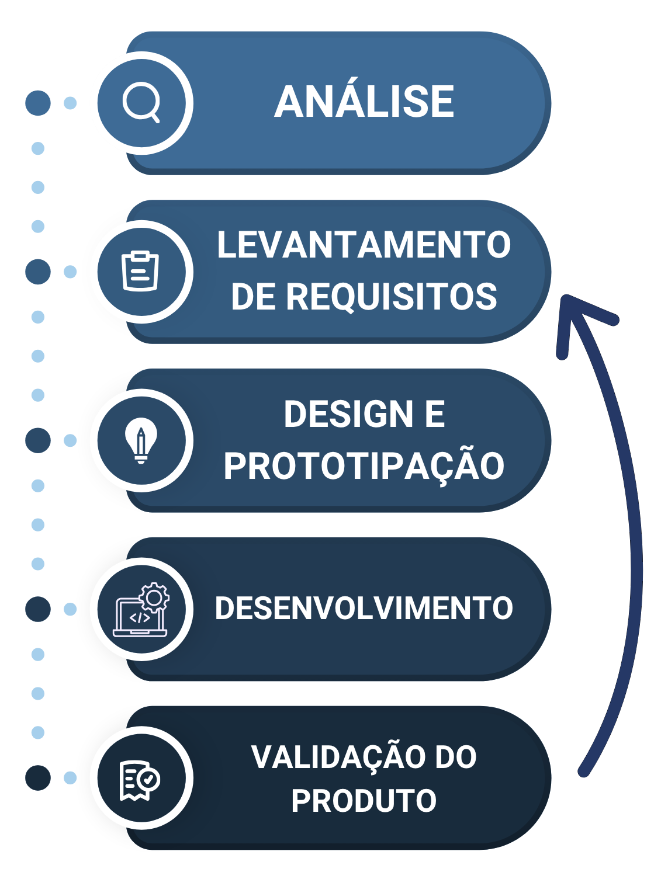
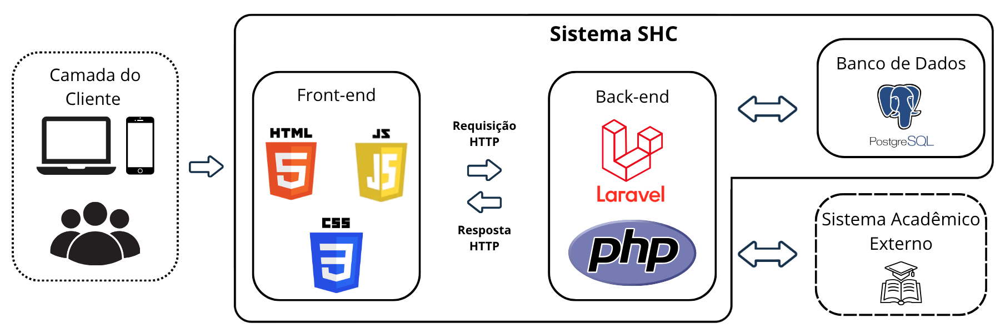

SHC
Sistema de Horas Complementares
Automatização do processo de gerenciamento de horas complementares da FMP
Membros
• Leonardo de Oliveira
• Maria Eduarda Schmidt
ADS | Faculdade Municipal de Palhoça
Orientação
Profª Daniela Amorim
Profª Msc. Simone Regina da Silva
Contexto e Visão do Produto
Desafios do Cenário Atual
O modelo de transição física cumpre o seu papel, mas apresenta vulnerabilidades operacionais inerentes ao formato:
- Rastreabilidade: Dificuldade natural em localizar ou auditar históricos físicos rapidamente.
- Tempo de Resposta: O trâmite em papel prolonga o tempo letivo de devolutiva ao aluno.
- Demanda Operacional: Elevada alocação da equipe administrativa em tarefas de compilação.
Visão do Produto
O SHC atua como um facilitador que centraliza o controle institucional e adiciona autonomia e agilidade ao processo.
- Sustentabilidade: Forte redução da dependência de papel.
- Eficiência: Acompanhamento do progresso em tempo real.
- Segurança: Integridade e rastreabilidade dos registos.
Objetivos e Stakeholders
Objetivos do Sistema
Geral: Automatizar o gerenciamento de horas complementares na FMP.
- Eliminar formulários físicos e planilhas
- Permitir cadastro digital de certificados
- Garantir consulta de histórico e status
Público-Alvo (Stakeholders)
- Alunos: Autonomia para envio e rastreabilidade total.
- Coordenadores: Agilidade na validação e painéis de controle.
- Instituição: Eficiência operacional e sustentabilidade (ESG).
Fundamentação e Contextualização
Por que automatizar?
- Sistemas Web: Essenciais na modernização acadêmica.
- Redução de Riscos: Proteção contra perda ou extravio de dados.
- Confiabilidade: Fluxos ágeis, rastreáveis e seguros.
O SHC é fundamentado em:
Gestão automatizada de atividades
Sistemas web centralizadores
Usabilidade e Experiência do Usuário (UX)
Metodologia e Fluxo de Atividades
Pesquisa aplicada, qualitativa e exploratória.
Resumo do Fluxo
- 1. Análise: Entrevistas e estudo de formulários manuais.
- 2. Requisitos: Levantamento das regras de negócio (RF/RNF).
- 3. Design: Modelagem UML e prototipação de interfaces.
- 4. Desenvolvimento: Construção incremental do código.
- 5. Validação: Testes contínuos para garantir a usabilidade.

Desenvolvimento e Arquitetura

Backend
PHP / Laravel
Frontend
HTML, CSS, JS
Banco de Dados
PostgreSQL
Modelagem
GitHub e UML
Gestão do Produto e Impacto
Empreendedorismo e ESG
- Solução alinhada às ODS 4, 9 e 12.
- Arquitetura de produto escalável.
- Licenciamento anual ou aquisição.
- Foco na otimização de custos e tempo letivo.
Métricas de Sucesso (OKRs)
Foco na eficiência operacional e na experiência do usuário final:
- Agilidade: Submissão de certificados em no máximo 3 passos.
- Usabilidade: Meta de aprovação superior a 90% nos testes práticos.
- Adoção: Engajamento de 100% dos alunos ativos no novo fluxo.
Considerações Finais e Trabalhos Futuros
Considerações Finais
- Modernização: Simplifica a tramitação de dados na FMP.
- Transparência: Informação acessível para alunos e gestores.
- Eficiência: Adequa-se às necessidades institucionais.
Trabalhos Futuros
- Integração direta com o SGA
- Geração automática de relatórios (PDF)
- Notificações automáticas por e-mail
- Expansão para outras IES
Muito obrigado pela atenção!